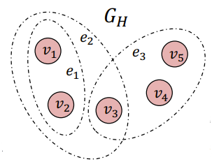
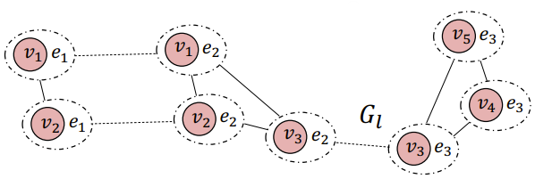
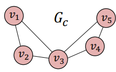
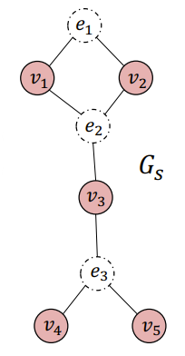

Hypergraph Analysis Toolbox
Contents:
Hypergraph Properties
Visualization
Decompositions
Higher Order Decompositions
Pairwise Decompositions
Similarity Measures
Controlability
Hypergraph Analysis Toolbox
»
Decompositions
View page source
Decompositions
Initial hyper graph

Higher Order Decompositions
Adjacency Tensor
Line Graph

Pairwise Decompositions
Clique Expansion

Star Graphs:
